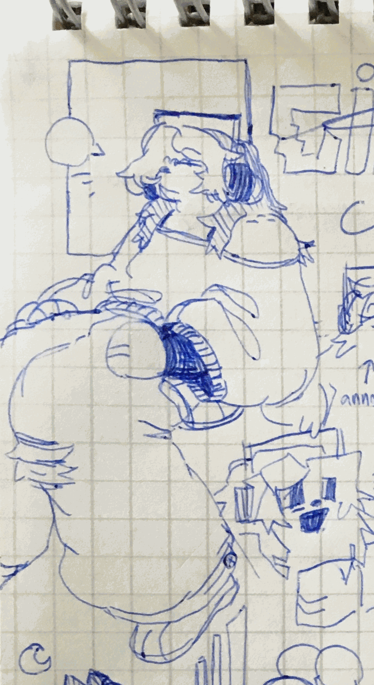

circe "c.c." is an aspiring musician looking for her inspiration—her own unique voice, you know? she's an employee of seafoam records, dallas, and a hobbyist magician in her free time.
she likes to claim she's been to every single party hosted in the last ten years. it's given her a large circle of talented friends, and one she relies on quite a lot at that. they'd describe her as loud, blustery, a little cold but pretty funny in a bit of a snarky way, with a brain a bit like a skipping record—but, some of them would say (and some of them would leave unsaid), there always seems to be a certain air of disconnect around her... one they can grope around, but never quite identify. she has no idea what you're talking about.

c.c. clerks the counter at seafoam records (a job she feels more than a little smug about). the shop is quiet enough that she can spend a lot of her time there tinkering with her debut ep, surrounded by a watchful gallery of great artists' vinyls. when her manager isn't looking, she likes to rip her favorite tracks from the shop catalog onto mixtapes. her manager is hardly ever looking.